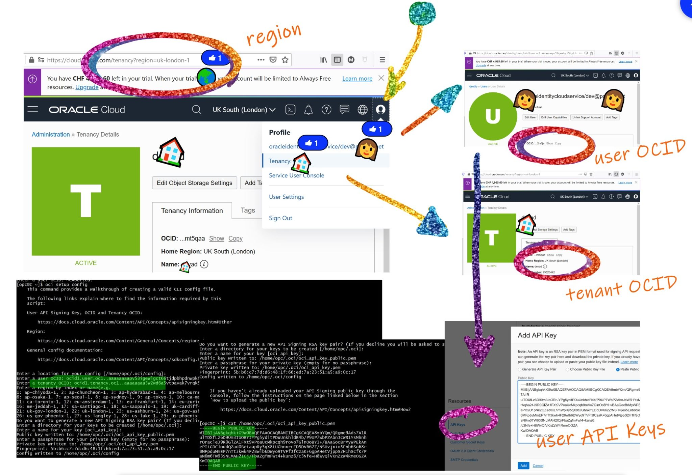

This was first published on https://www.dbi-services.com/blog/cloud-cli/ (2021-05-30)
Republishing here for new followers. The content is related to the versions available at the publication date.
.
Here is how to quickly install the CLI (Command Line Interface) for the following public clouds: Amazon, Google, Microsoft and Oracle. On Linux, I’m using wget but you can use curl. I’ll install all cloud command line interfaces into a $HOME/cloud directory and add an alias into $HOME/.bashrc if not already existing
( mkdir -p ~/cloud/aws-cli ; cd /var/tmp && wget -qc https://awscli.amazonaws.com/awscli-exe-linux-x86_64.zip && unzip -qo awscli-exe-linux-x86_64.zip && ./aws/install --update --install-dir ~/cloud/aws-cli --bin-dir ~/cloud/aws-cli && rm -rf ./awscli-exe-linux-x86_64.zip ./aws )
alias aws || echo 'alias aws=~/cloud/aws-cli/aws' >> ~/.bashrc && . ~/.bashrc
aws --version
As I used the –update flag in the install command line, and the url goes to the latest version, I just run the same to update the CLI
You find all info in one screen as you can see in the screenshot
$ aws configure
AWS Access Key ID [None]: REDACTED_AWS_ACCESS_KEY_ID
AWS Secret Access Key [None]: REDACTED_AWS_SECRET_ACCESS_KEY
Default region name [None]: eu-west-1
Default output format [None]: text
[opc@cern-exa18-ecktj1 ~]$ cat ~/.aws/config
[default]
region = eu-west-1
output = text
[opc@cern-exa18-ecktj1 ~]$ cat ~/.aws/credentials
[default]
aws_access_key_id = REDACTED_AWS_ACCESS_KEY_ID
aws_secret_access_key = REDACTED_AWS_SECRET_ACCESS_KEY
This is an example where you can set that the information is written into a ~/.aws directory, associated with a [default] profile. You can use a different profile with –profile or set all values with arguments and environment variables like:
$ AWS_ACCESS_KEY_ID=REDACTED_AWS_ACCESS_KEY_ID AWS_SECRET_ACCESS_KEY=REDACTED_AWS_SECRET_ACCESS_KEY AWS_DEFAULT_REGION=eu-west-1 aws dynamodb list-tables --region eu-west-1 --output json
{
"TableNames": [
"SkiLifts"
]
}
Of course, with those credentials you can access to my account, you must keep them safe and secret. And use the least priviledged user. I’ll remove them from my IAM account before publishing this post.
To uninstall I remove the cli and the configuration:
rm -rf ~/cloud/aws-cli/aws ~/.aws
Here, unfortunately, the URL mentions the version and there’s no URL to get the latest one.
( mkdir -p ~/cloud/gcp-cli ; cd /var/tmp && wget -qc https://dl.google.com/dl/cloudsdk/channels/rapid/downloads/google-cloud-sdk-337.0.0-linux-x86_64.tar.gz && tar -zxf $(basename $_) -C ~/cloud/gcp-cli && ~/cloud/gcp-cli/google-cloud-sdk/install.sh --usage-reporting false --screen-reader false --command-completion false --path-update true --rc-path ~/cloud/.bashrc --override-components && rm -rf google-cloud-sdk-linux-x86_64.tar.gz && gcloud config set disable_usage_reporting false)
alias gcloud || echo 'alias gcloud=~/cloud/gcp-cli/google-cloud-sdk/bin/gcloud' >> ~/.bashrc && . ~/.bashrc
alias gsutil || echo 'alias gsutil=~/cloud/gcp-cli/google-cloud-sdk/bin/gsutil' >> ~/.bashrc && . ~/.bashrc
alias bq || echo 'alias bq=~/cloud/gcp-cli/google-cloud-sdk/bin/bq' >> ~/.bashrc && . ~/.bashrc
gcloud --version
I choose to disable usage reporting here. And update a .bashrc in my ~/cloud directory rather than the default one
As the url may get a past version, better to upgrade
$ yes | gcloud components update
Beginning update. This process may take several minutes.
This updates all components
$ gcloud init
The authentication gives you an URL where you allow and get a verification code to paste. You can optionally set the default region and zone. Those are visible in ~/.config/gcloud
$ cat ~/.config/gcloud/configurations/config_default
[core]
disable_usage_reporting = false
account = myaccount@gmail.com
project = disco-abacus-424242
[compute]
zone = europe-west2-a
region = europe-west2The credentials are stored in a sqlite database
This removes the cli and all configuration:
rm -rf ~/cloud/gcp-cli/google-cloud-sdk ~/.config/gcloud
( rm -rf ~/cloud/azure-cli ; touch ~/cloud/.bashrc; mkdir -p ~/cloud/azure-cli && cd /var/tmp && wget -qc https://aka.ms/InstallAzureCli && sh $(basename $_) && rm -f /var/tmp/InstallAzureCli )
~/cloud/azure-cli
~/cloud/azure-cli
y
~/cloud/.bashrc
I’ve copy-pasted the answers. I didn’t look at the way they do that but I’ve found no obvious way to pass them as parameters or here file. And given how those scripts works I don’t want them to touch my .bashrc file to I do it in one I create in ~/cloud.
alias az || echo 'alias az=~/cloud/azure-cli/az' >> ~/.bashrc && . ~/.bashrc
az version
az upgrade
$ az login
The authentication gives you an URL where you allow paste a code and the authentication is automatic. The info and credential tokens are stored in ~/.azure/azureProfile.json ~/.azure/accessTokens.json
rm -rf ~/cloud/azure-cli
( mkdir -p ~/cloud/oci-cli ; cd /var/tmp && wget -qcO oci-cli-install.sh https://raw.githubusercontent.com/oracle/oci-cli/master/scripts/install/install.sh && sh oci-cli-install.sh --install-dir ~/cloud/oci-cli --exec-dir ~/cloud/oci-cli --script-dir ~/cloud/oci-cli --optional-features db --rc-file-path ~/cloud/.bashrc --accept-all-defaults && rm oci-cli-install.sh )
As I did with the previous one I don’t let it change my .bashrc for autocompletion but do it in ~/cloud/.bashrc
alias oci || echo 'alias oci=~/cloud/oci-cli/oci' >> ~/.bashrc && . ~/.bashrc
oci --version
sudo yum install -y python-pip & pip install oci-cli --upgrade
Here you will need to generate a key and get multiple identifiers: 
oci setup config
The tool displays a link to the documentation. Better follow it as the console sometimes changes.
Basically, as in the screenshot above, you will need the default region identifier (which you find in the url), the tenant OCID and the user OCID (for which you will add the API key) – can can find those from “profile” upper-right menu.
pip uninstall oci-cli
$HOME/lib/oracle-cli
$HOME/bin/oci
$HOME/bin/oci-cli-scripts
{kind=link}
{kind=link}